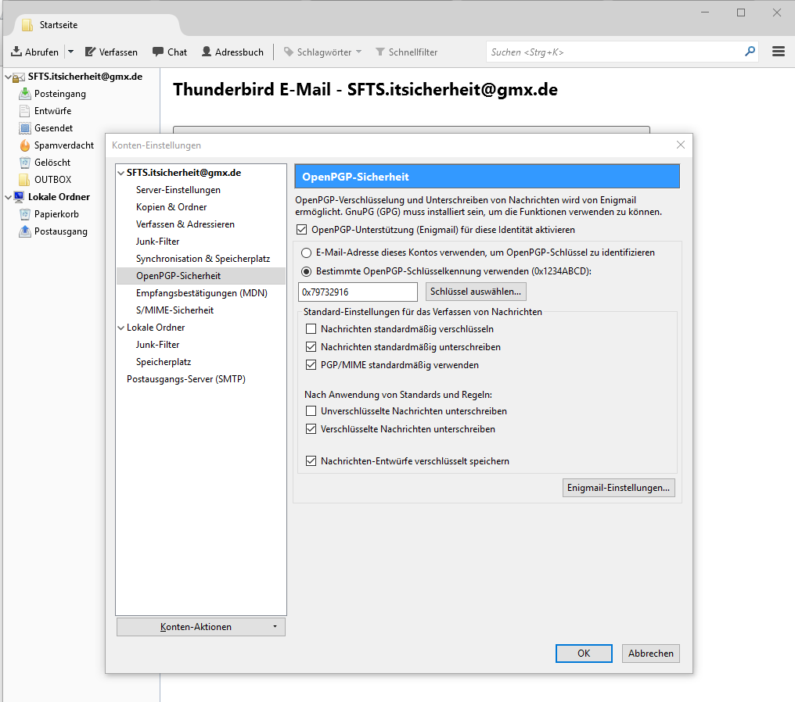

-
Zuerst wird Mozilla Thunderbird von der Herstellerseite heruntergeladen und Installiert.
Bei der Installation richten wir gleich unser E-Mail Konto
SFTS.itsicherheit@gmx.de
als IMAP Konto ein.
Zudem deaktiveren wir das Übeprüfen ob Thunderbird als Standard Progrmm für E-Mail hinterlegt ist.
Als nächstes fügen wir über oben rechts über Add-Ons die Erweiterung "Enigmail" zu Thunderbird hinzu.
Diese Erweiterung wird vom Enigmail Projekt breitgestellt, einer Non-Profit Organisation mit Sitz in der Schwiz, zudem finanziert sich das Projekt hauptsächlich mit den Spenden der Nutzer.
Das Add-On erweitert Thunderbird um dei Möglichkeit E-Mail verschlüsselt über OpenPGP zu versenden, sowie sie zu signieren.
Bei der Installation von Enigmail verwenden wir den Einrichtings Assistenten und installieren GnuPG, dies ist eine freie Software für die Schlüssel Erzeugung und die Schlüsselverwaltung
Mit dem Einrichtingsassisteneten erstellen wir auch gleich unere Schlüssel und das dazugehörige Wiederrufszertifikat.
Nun gehen wir in die Einstellung unsres E-Mail kontos und Aktiveren dort, die Verschlüsselung.
Hier Aktivern dann, das die Nachrichten Standardmäßig verschlüsselt, signiert werden und PGP/MIME verwendtet wird.
Zudem lassen wir noch alle Verschlüsselten Nachrichten unterschreiben und speichern unsere Entwürfe verschlüsselt.
